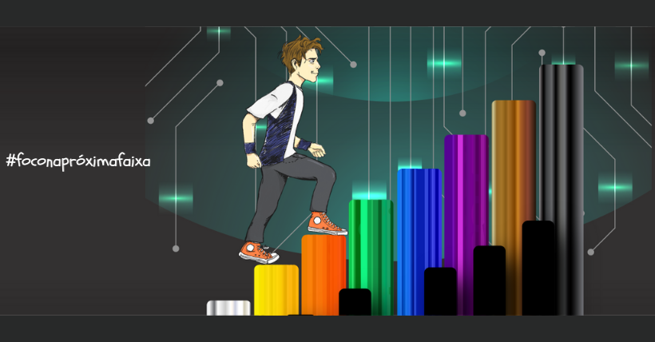

05 de Maio de 2019
Jornada do Zero à Primeira Música

Essa é a imagem do curso de teclado que mostra o desenvolvimento por
faixas em cores como as faixas de lutadores, cada cor simboliza um
avanço no nível técnico, o link do vídeo mostra uma das primeiras
músicas que eu gravei em vídeo foi também quando eu alcancei a faixa
laranja do curso.